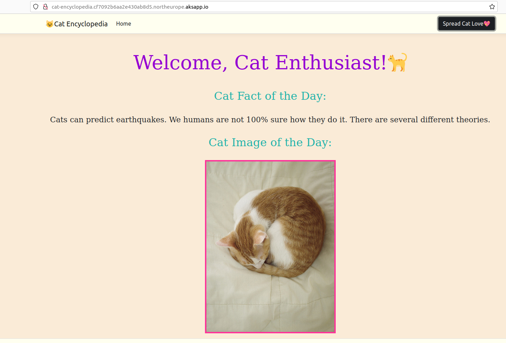
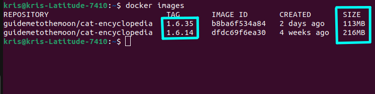
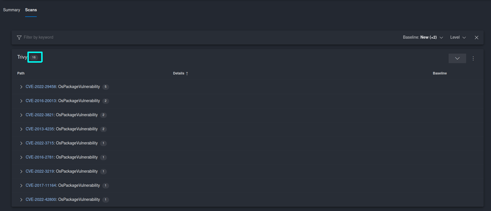
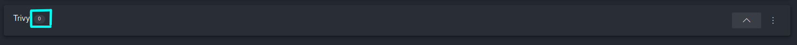
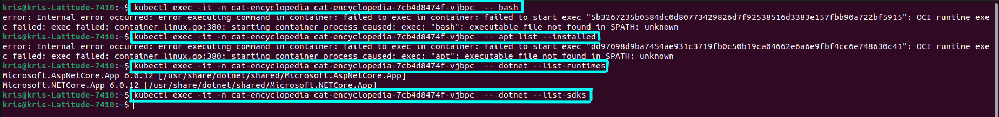

[🎄.NET Advent Calendar🎄] Strengthening Security Posture of Containerized .NET Applications With Chiseled Ubuntu Containers
🎄This blog post is also a contribution to .NET Advent Calendar where during December, experts from the tech community share their knowledge about .NET related topics. You’re welcome to check out all the contributions here: .NET Advent Calendar 2022
Introduction
In the modern world of cloud native application development more and more organizations are moving away from classic bare metal deployments and are adopting technologies like containerization and orchestration for a more efficient and sustainable way to deploy applications at scale on different types of infrastructure.
Even though the way we’re packaging and deploying applications is changing, the importance of continuously ensuring and strengthening security posture of our systems is still extremely crucial. With containers and container orchestrators like Kubernetes, security controls must be implemented at multiple levels and it’s important to understand what those levels are once you start containerizing your applications. 🔑
In this blog post I would like to talk about how you can minimize the attack surface of the containerized .NET applications with Chiseled Ubuntu Containers which have recently introduced support for .NET 6 and now .NET 7 applications targeting Linux operating system.
Container Security - pitfalls and must do’s
Before we dive into Chiseled Ubuntu Containers let’s set the baseline by looking at some pitfalls when it comes to container security and what are the must do’s in order to protect containers against those.
Containers and root user
One of the most important security improvements that you can have in place for containers is to configure them to run with a non-root user. You can also consider using rootless containers or rootless mode if it’s possible and is supported, for additional container hardening.
Running containers as unprivileged user
By default if you don’t provide a user that container should run with, root user will be used. Unless you’re using rootless containers, which we will talk about shortly. The big security risk here is that container has access to the host system (a server, a VM an application container is running on, a Node in Kubernetes) and can access and modify content on the host as a root user, with the same level of permissions! If there’s a vulnerability in the application that’s running in a container or if a container is misconfigured and malicious actor figures it out, he/she may be able to exploit it and get access to the host system with root user’s level of permissions! Just imagine how harmful this can be - I wouldn’t wish anyone to experience that. 🙀
Unfortunately quite many third-party images still use root user by default, but we can see that the situation has started to change. More and more third-party services have started to use an unpriveleged user by default in their container images or are offering an alternative image which is unpriveleged. A good example here is NGINX: they offer both a regular image which uses root user by default, and an unpriveleged image which uses a user with minimal level of permissions to run NGINX server in a container: nginxinc/nginx-unprivileged. All in all, it will take time to get to a point where most of the container images out there will run with unprivileged user by default.
When a third-party image doesn’t provide a possibility to run with non-root user, it may be possible to create a custom image based on the original image where you can explicitly define an unprivileged user that container will run with. But there are cases where this is not that easy to do: for example, default ASP.NET image doesn’t let you off that easily: Unable to start Kestrel. System.Net.Sockets.SocketException (13): Permission denied while running alpine as non root user. Often the reason is the default port that container is binded to - there is a restriction in Linux OS which requires a root user if you’re using a port that is lower than 1024. Port 80 is often used by default which falls under this limitation. Shortly we’ll see how Chiseled Ubuntu Containers come to the rescue in this case!😺
Once you start using third-party images it’s important that you do your research in order to understand if those images use root user by default or not, and which options are available in order to configure the image in the most secure way. When building your own container images, do ensure that you’re not using a root user unless it’s absolutely necessary. It’s also a good idea to implement checks for this type of misconfiguration, for example with Azure Policy. Using policies as an additional security control can help you automate detection of different types of misconfigurations and alerting in case a fix is required.
Rootless Containers
For additional security and isolation you can consider adopting rootless containers, if it’s supported for your use case. Rootless containers fully eliminate access to the root user on the host system that a container runs on. In this case, both the container itself and container runtime are running without root privileges. Even if you forget to specify a non-root user to run containers with, or you may need a root user to perform specific operations inside the container, outside of the container you will not have root user privileges, i.e. you will not be able to access the host system as root. In this case, if your container is compromised and an attacker will be able to get access to the host system, he/she will not be able to perform any actions with root privileges on the host.
Container engines like Podman have been offering rootless containers for a while now. It was harder to offer support for this by container engines which required a daemon in order to create and manage containers - for example, Docker is one of the container engines that didn’t support it until 2020. With Docker version 20.10.0 support for rootless mode has been officially released in GA. With rootless mode in Docker even Docker daemon doesn’t require root privileges. You can read more about rootless mode in Docker here: Run the Docker daemon as a non-root user (Rootless mode)
Rootless containers/rootless mode is a great security enhancement in the containerization world, but it has quite a few limitations which at this point narrows down the use cases where you will be able to adopt it. If you would like to learn more, you can check out this link: Rootless Containers
Running containers with unprivileged user in Kubernetes
If you’re planning on running containers in Kubernetes, in addition to defining an unprivileged user when building a container image you should also use Security Context. Security Context defines privileges and access control settings for containers that are running inside a Pod in a Kubernetes cluster, and for the Pod as a whole (a Pod can have multiple containers running in it). With Security Context you can not only define which user to run the container/Pod with but also if it can be run in privileged mode, gain more privileges than it’s parent process, etc.
Using Security Context will ensure that not only the container is built with the correct default user with minimal privileges, but also that the user is correctly set when the container is running in a Pod in a Kubernetes cluster.
You can read more about Security Context in Kubernetes here: Configure a Security Context for a Pod or Container
Supply chain and third-party dependencies
In most cases, when packaging your applications in a container you will need to use a third-party base image that is built upon an operating system of your choice and has necessary frameworks and tools installed that your application may need in order to run successfully. For example, if you want to run an ASP.NET 6 application on Linux, you would need a base image that includes a Linux distribution of your choice and has ASP.NET 6 installed. In many cases though third-party images may contain lots of unnecessary tools and libraries that your application doesn’t need. Having lots of unnecessary components installed results in a broader attack surface for malicious actors to explore. In addition, the more components you have, the more security vulnerabilities you may need to handle.
In order to mitigate this you should use minimal container images that include only those tools and utilities that are absolutely necessary in order for your application to run. If your application requires additional tools and libraries you can granularly define what to include on top of the minimal package as part of the container build phase. Minimal container images definitely have security benefits, but including only what’s needed may also significantly reduce the total container image size which results in faster image download and container startup time.
Summary on mitigating common container security pitfalls
To sum it up, in order to strengthen container security and mitigate common pitfalls you should:
- 🛡 Define a default unprivileged user that container will run with;
- 🛡 Bind to ports higher than 1024 - if a lower port is required, a proxy can be used;
- 🛡 Be conscious when choosing third-party images: choose unprivileged image or build an unprivileged custom image on top of the original image;
- 🛡 Build and use minimal images - install only what’s needed in order to successfully run your application in a container;
- 🛡 In Kubernetes, use SecurityContext to ensure that Pods and application containers running in Pods comply with least privilege principle;
- 🛡 Implement security scanning tools like Trivy and use policies to detect and alert on this type of misconfiguration, for example with Azure Policy;
Now, let’s take a look at what Chiseled Ubuntu Containers are and how they can make it easier for us to mitigate common container security pitfalls mentioned above in containerized .NET applications.😼
Chiseled Ubuntu Containers && .NET
In August 2022 built-in support for .NET 6 in Ubuntu was officially announced. Built-in support in this case means that you can now install .NET 6 on Ubuntu 22.04 with apt install dotnet6 ! This is quite cool in itself. 😺 In addition support for .NET with Chiseled Ubuntu Containers was officially released which is what we’re going to look into now.
Please note that at the point of writing this blog post .NET with Chiseled Ubuntu Containers is still in preview and should not be used in production environments. This blog post will be updated once the functionality reaches GA.
What are Chiseled Ubuntu Containers? 🤔
Chiseled Ubuntu Containers are a minimal version of Ubuntu image with enhanced security:
- ✅ There is no shell or package manager installed;
- ✅ Only needed libraries and utilities are installed;
- ✅ Uses unprivileged, non-root user by default;
Chiseled Ubuntu Containers (CUC) are available from Ubuntu version 22.04 (Jammy). CUC are built based on the original Ubuntu 22.04 OS, but are heavily stripped to include only what’s necessary, and are extra hardened in terms of security following least privilege principle. An advantage of CUC is that it significantly reduces the attack surface and total amount of security vulnerabilities that you may need to handle. Another advantage is the total image size - compared to the original ASP.NET 6 Ubuntu Jammy image, ASP.NET 6 Chiseled Ubuntu Container image is at least 100MB smaller! 😻
If you haven’t worked with minimal container images before it will require a mindset change and some getting used to. Since there’s no shell installed you will not be able to just log into the container and start running shell commands like you can do with regular images. If you think about it though, in the real-life production world this is not something that you would want to be able to do either so, using this type of images can definitely help you with shifting left on security by creating and managing containers in a secure way from the start.
Chiseled Ubuntu Containers come with some limitations which you should be aware of and prepare for:
- ⚠️ As mentioned in the above section, some operations which require root privileges like binding to privileged ports (< 1024) are not allowed, but there are alternative solutions available. If you nevertheless require root user privileges, you can still add a root user to CUC, but it is a security-related decision that you need to evaluate in your specific use case;
- ⚠️ Chiseled images with .NET SDK are currently not supported;
- ⚠️ Since this is a relatively new product not much official documentation is available yet, but I believe that once it reaches GA and gets adopted by a broader tech community, more information, recommendations, tips and tricks will come.
Now, let’s see Chiseled Ubuntu Containers in action!😼
Example: Porting Cat Encyclopedia app to .NET 7 and Chiseled Ubuntu Containers and deploying on AKS
If you’ve seen some of my talks you have probably seen my demo application that spreads lots of love for cats - Cat Encyclopedia. 😁 This is a simple ASP.NET 6 web application that initially was using Ubuntu Jammy (22.04) base image. Now, let’s port it to ASP.NET 6 Chiseled Ubuntu Container image and finally upgrade it to ASP.NET 7.
You can find the source code for Cat Encyclopedia app in this GitHub repo: cat-encyclopedia
The process is pretty straightforward and as creators state themselves, shouldn’t require any modifications for most of the applications.
First of all we will need to update the base image in Dockerfile from mcr.microsoft.com/dotnet/aspnet:6.0-jammy to mcr.microsoft.com/dotnet/nightly/aspnet:6.0-jammy-chiseled. Please note that for now .NET images built with Chiseled Ubuntu Containers are available for download from nightly repos while this functionality is still in preview. Also, we must ensure that we’re binding our container to a non-privileged port, i.e. a port that is higher than 1024. By default Chiseled Ubuntu Containers use port 8080 so that’s the one we will use as well.
# Dockerfile
FROM mcr.microsoft.com/dotnet/nightly/aspnet:6.0-jammy-chiseled
COPY CatEncyclopedia/src App/
WORKDIR /App
ENV PORT 8080
EXPOSE 8080
ENTRYPOINT ["dotnet", "CatEncyclopedia.dll"]
Now, in order to deploy the new container image to AKS, we will need to update container port in the Deployment specification and the port in the Service specification of Cat Encyclopedia Helm chart, and we’re all set!🤩
Please note that Chiseled Ubuntu Containers are supported on AKS version 1.25 or newer since it requires Ubuntu 22.04 on the Nodes as well.
# deployment.yaml
# REST OF THE CODE IS OMITTED
containers:
- name: {{ .Chart.Name }}
securityContext:
{{- toYaml .Values.securityContext | nindent 12 }}
image: "{{ .Values.image.repository }}:{{ .Values.image.tag | default .Chart.AppVersion }}"
imagePullPolicy: {{ .Values.image.pullPolicy }}
ports:
- name: http
containerPort: 8080 # <- Update container port on which to expose application container in a Pod
protocol: TCP
# REST OF THE CODE IS OMITTED
# values.yaml
# REST OF THE CODE IS OMITTED
service:
type: ClusterIP
port: 8080 # <- Update port of the Service that's created for Cat Encyclopedia Pods
# REST OF THE CODE IS OMITTED
Finally, let’s define Security Context for Cat Encyclopedia Pods and application container to ensure that it follows the least privilege principle:
# values.yaml
securityContext:
runAsUser: 999
runAsNonRoot: true
privileged: false
allowPrivilegeEscalation: false
capabilities:
drop:
- all
We’re all set! Now, once we build new container image and Helm chart, we can deploy Cat Encyclopedia to AKS and it still works as expected with Chiseled Ubuntu Containers! 🥳

If we want to upgrade it to ASP.NET 7 we will only need to update application source code to target .NET 7 and update the base image in the Dockerfile to mcr.microsoft.com/dotnet/nightly/aspnet:7.0-jammy-chiseled.
We can compare the size of the image before and after we started using Chiseled Ubuntu Containers with docker images command - as you can see in the screenshot below the latter is 100MB+ smaller, just as stated in the release announcement😁

Let’s run a security scan for both of the images and see how many vulnerabilities will be detected in each case. For this purpose I have used a tool called Trivy. For the initial Cat Encyclopedia image which was built upon ASP.NET 6 Ubuntu Jammy base image Trivy detected 16 security vulnerabilities related to the operating system packages:

Whilst for the updated Cat Encyclopedia image which was built upon ASP.NET 6 Chiseled Ubuntu base image Trivy detected ….
0 security vulnerabilities!🙀

This is a pretty impressive result in my opinion, what do you think? 😺
Finally, let’s give it a test and try to start a shell inside a running CUC container and run some shell commands, for example, to check what packages are installed in the container - as you can see in the screenshot below, we’re not able to do that and it makes sense since Chiseled Ubuntu Containers don’t have any shell installed. But, we can run dotnet commands since .NET CLI is needed for the ASP.NET container and is therefore pre-installed as part of the base image.

Great job! We’ve successfully ported an ASP.NET 6 application to Chiseled Ubuntu Containers and successfully deployed it on AKS both on ASP.NET 6 and ASP.NET 7 versions. We tested some of the improvements in terms of image size and security enhancements in Chiseled Ubuntu Containers for .NET, and it looks good under the hood! 💪 I can say that I’m looking forward to seeing Chiseled Ubuntu Containers released in GA and adopted by more .NET applications. 😃
Additional resources
Below you may find a few resources to learn more about Chiseled Ubuntu Containers for .NET applications and securing containerized applications in general:
- Official announcement on .NET Blog about support for using .NET in Chiseled Ubuntu Containers starting with .NET 6: .NET 6 is now in Ubuntu 22.04
- Great list from OWASP of common security mistakes and good practices that will help you secure your Docker containers: Docker Security Cheat Sheet¶
- GitHub repo where you can find source code for the demo app used in this blog post, including Dockerfile and Helm chart: guidemetothemoon
- Official Docker documentation on enabling rootless mode: Run the Docker daemon as a non-root user (Rootless mode)
- Extensive documentation about rootless containers, how it works and how it’s supported by different components: Rootless Containers
- Official documentation from Kubernetes on how to run Kubernetes Node components such as kubelet, CRI, OCI, and CNI without root privileges, by using a user namespace: Running Kubernetes Node Components as a Non-root User
That's it from me this time, thanks for checking in!💖
If this article was helpful, I'd love to hear about it! You can reach out to me on LinkedIn, Twitter, GitHub or by using the contact form on this page.😺
Stay secure, stay safe.
Till we connect again!😻